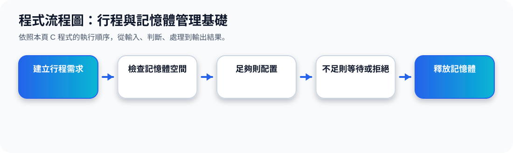

二、Process Management：什麼是 Process？
核心觀念 Process 是 program in execution，也就是「正在執行中的程式」。Program 本身是被動的檔案或程式碼；當它被載入並開始執行，就變成主動的 process。
Program
被動實體，被放在磁碟或記憶體中，尚未真正使用 CPU。
Process
主動實體，正在執行，會需要 CPU、memory、I/O 與 files。
Process 形成與結束動畫
三、Process 需要哪些資源？
投影片 15 說明 Process 不是只需要程式碼，它還需要系統資源才能完成工作。這些資源通常由作業系統管理與分配。
Process 常用資源
Single-threaded Process
單執行緒行程只有一個 program counter，用來記錄下一個要執行的指令位置。
Multi-threaded Process
多執行緒行程中，每個 thread 通常都有自己的 program counter，因此可以在同一個 process 內處理多條執行路徑。
簡單記法：Program 是「還沒跑的程式」；Process 是「正在跑的程式」。
四、Memory Management：記憶體管理在做什麼？
投影片 16 的重點是：資料與指令要被 CPU 處理或執行前，必須先進入 main memory。因此作業系統必須管理記憶體空間。
執行指令
Memory Management 動畫
五、記憶體管理的四個主要工作
1、記錄哪些記憶體正在使用
OS 需要知道目前哪些區塊被哪些行程使用，哪些區塊還是空的。
2、決定哪些 process / data 要移入或移出
當記憶體不足或需要執行新程式時，OS 會判斷哪些內容要保留，哪些要移出。
3、根據需求分配記憶體
當新行程開始執行，OS 會分配合適的記憶體空間。
4、釋放不再使用的空間
當行程結束後，OS 會回收資源，讓其他行程可以使用。
程式流程圖與流程講解
程式流程圖：行程與記憶體管理基礎

流程講解
可編輯 C 程式範例與線上編輯器
可編輯 C 程式：行程與記憶體管理基礎
這段程式依照上方流程圖設計，包含中文註解，適合貼到線上編輯器直接執行與修改。
程式題目完整教學內容
程式題目完整教學：行程與記憶體管理基礎
一、程式題目講解
模擬行程向作業系統申請記憶體，並判斷是否配置成功。
核心觀念是記憶體總量、已使用量與配置限制：申請量加上已使用量不能超過總記憶體。
二、完整程式碼
以下程式碼可直接複製到 C 語言線上編譯器執行。程式中已加入中文註解，說明主要變數、判斷流程與輸出目的。
#include <stdio.h>
/*
主題 5：行程與記憶體管理基礎
功能：模擬行程向 OS 申請記憶體。
*/
int main(void) {
int totalMemory = 100;
int request[] = {30, 50, 40, 20};
int used = 0;
int i;
for (i = 0; i < 4; i++) {
printf("P%d 申請 %d MB：", i + 1, request[i]);
if (used + request[i] <= totalMemory) {
used += request[i];
printf("配置成功，目前使用 %d/%d MB\n", used, totalMemory);
} else {
printf("配置失敗，記憶體不足。\n");
}
}
return 0;
}三、程式執行結果
P1 申請 30 MB：配置成功，目前使用 30/100 MB
P2 申請 50 MB：配置成功，目前使用 80/100 MB
P3 申請 40 MB：配置失敗，記憶體不足。
P4 申請 20 MB：配置成功，目前使用 100/100 MB結果說明：核心觀念是記憶體總量、已使用量與配置限制：申請量加上已使用量不能超過總記憶體。 程式依照設定的資料與控制流程逐步輸出，因此可以從結果看到每個步驟的執行順序與狀態變化。
四、程式流程圖與流程圖說明
本頁上方已提供對應的程式流程圖，圖中以「開始、資料設定、條件判斷、重複處理、輸出結果、結束」呈現程式執行順序。
程式依序處理四個行程的記憶體請求，成功就累加 used，失敗就顯示記憶體不足。
五、重要函數與語法說明
if 條件判斷是否還有足夠空間；陣列 request[] 儲存各行程申請量；printf() 顯示配置結果。
六、整體說明
本題的學習重點是把作業系統概念轉成可觀察的 C 程式流程。學生應先理解題目概念，再對照程式碼、流程圖與執行結果，掌握變數設定、條件判斷、迴圈處理與輸出結果之間的關係。